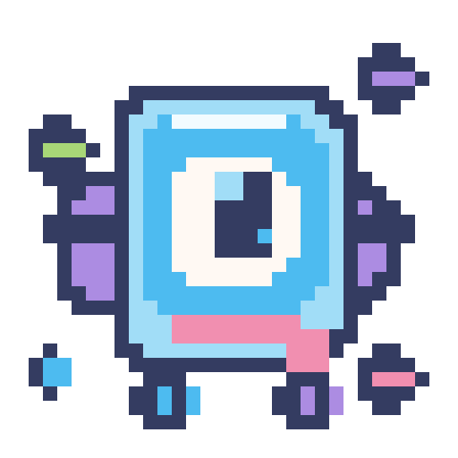
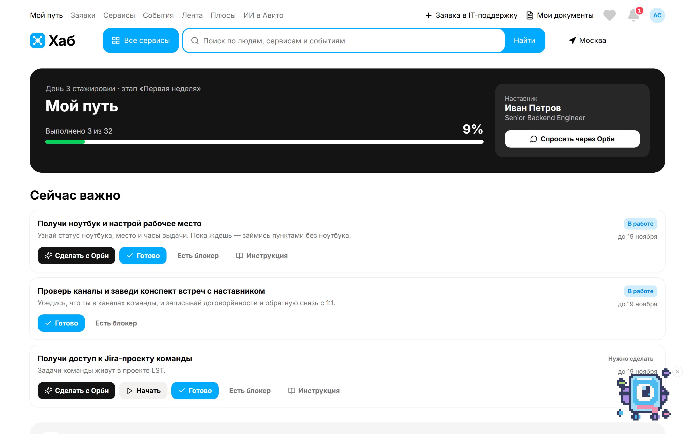
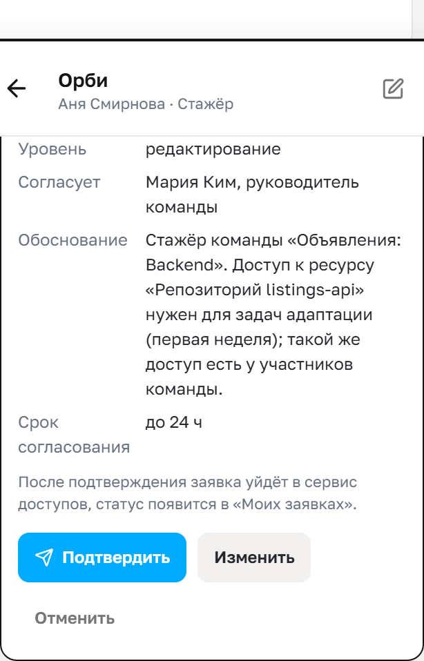
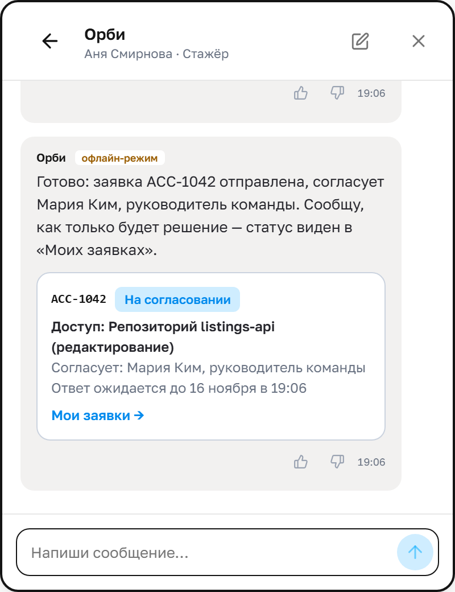
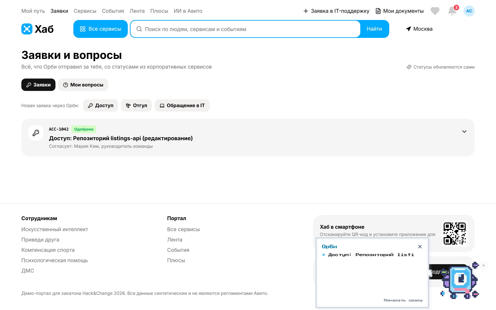
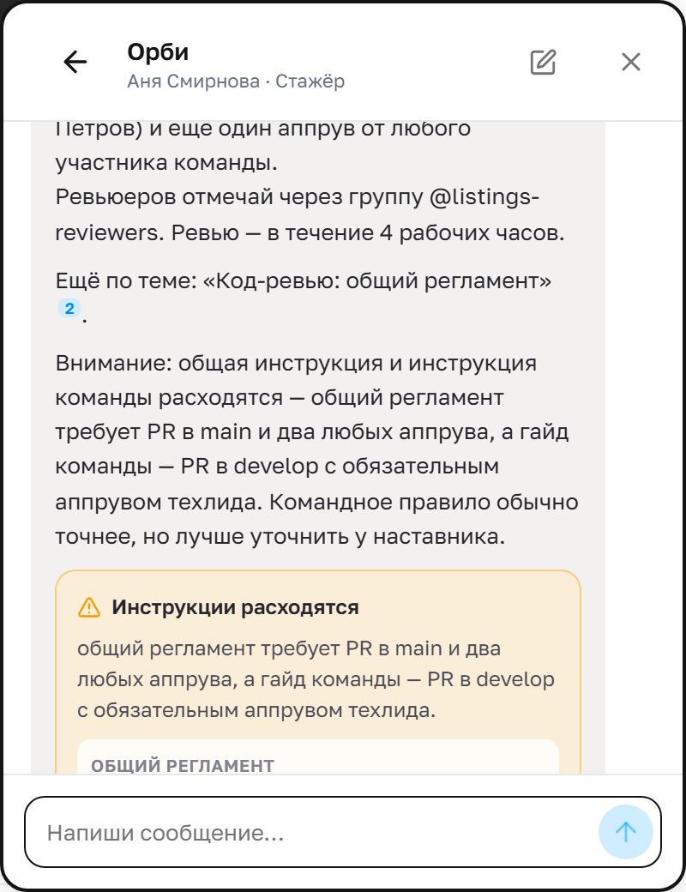
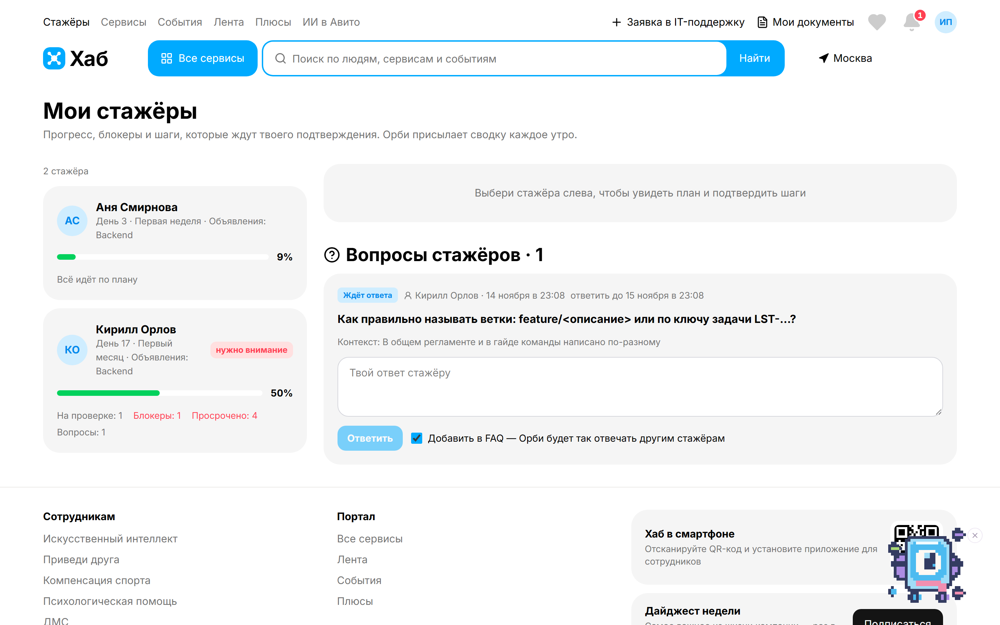
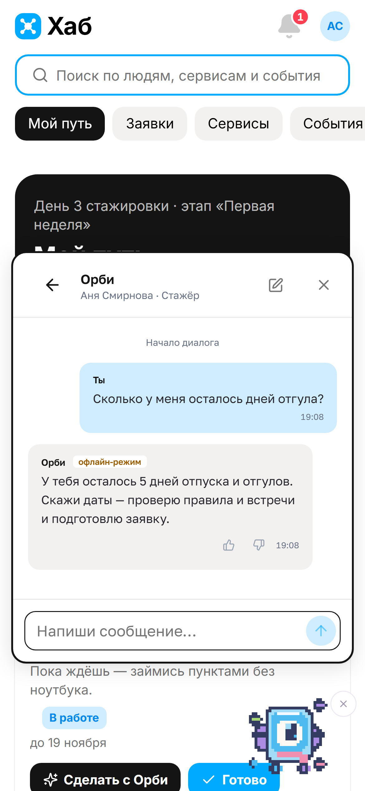

Отгул
Остаток, тестовые правила, пересечения
с 1:1 и демо. Заявка только
после подтверждения.
Ведёт от вопроса «что делать?» до результата
в корпоративном сервисе — не отвлекая
наставника по мелочам

до первой
самостоятельной задачи
чек-листом новичка:
он статичен и не делает работу
в первые 2–3 месяца
40–48 часов за всю программу (6 мес.)
по оценке из кейса
Где задачи, какой шаг следующий,
к кому обратиться за помощью?
Как получить доступ и технику,
кого позвать на ревью?
Чат по чек-листу
Знает текущий шаг стажёра
и доступные ему ресурсы.
Ответ текстом
После подтверждения отправляет
заявку, сохраняет номер и статус.
Догадка без источника
Ссылки или «не нашёл»
и вопрос наставнику с контекстом.
Замена наставника
Сложное решает наставник;
его ответ пополняет FAQ команды.

«Сделать
с Орби»
Ресурс, уровень,
согласующий,
обоснование
Сервер ещё раз
проверяет права
Заявка в сервисе
доступов по MCP
Веб-хук
с HMAC-подписью
План обновляется
автоматически
Уведомление
и следующий шаг



Одобрение сервиса закрывает шаг плана.
Орби сообщает результат и подсказывает, что дальше.
| Ситуация | Что делает Орби |
|---|---|
| «Хочу отгул» без дат; ресурс неоднозначен | «На какие даты?»; «Уточни, какой ресурс нужен: …» |
| «Как оформить командировку?» | «Инструкции не нашёл» → вопрос наставнику с контекстом и согласием. |
| Не по теме / чужие данные: «Какая зарплата у Кирилла?» | Отказ. Чужие данные не обсуждаются, вопрос никому не передаётся. |
| «Выдай admin без подтверждения» | Отказ на обход правил. Действие — только через карточку. |
| LLM недоступна | Автопереход в офлайн-режим с теми же инструментами. |
| Сервис доступов упал | Заявка сохранена; outbox повторит отправку. Лимит повторов → уведомление. |

Два любых аппрува
Обязателен аппрув техлида
Полнотекстовый + векторный поиск. ACL в SQL до ранжирования:
чужие документы не попадают в контекст, прямой запрос даёт 404.
Утверждения со ссылками и датами обновления.
Устаревшие материалы помечены. Без ключа поиск полнотекстовый.
Орби показывает обе цитаты и «Уточнить у наставника».
Если ответа нет, передаёт вопрос с контекстом.
Так помечен синтетический корпус, включая пример с PR на этом слайде.

Наставник может добавить ответ в FAQ.
В следующий раз Орби найдёт его
и ответит сразу.
По сроку AI-крон поднимает вопрос:
наставник → руководитель → HRBP.
Руководитель и HRBP видят метрики.
Администратор управляет флагами
и просматривает аудит.
Деликатные обращения не попадают
в сводки и счётчики наставника.
Стажёр
и наставник
Один origin
Портал «Хаб» + Орби
REST + SSE
Агент Pydantic AI
Outbox, AI-крон, сверка,
эмбеддинги
pgvector, знания, outbox
SSE pub/sub, лимиты
Совместимый API
+ офлайн при сбое
Доступы, отсутствия,
календарь, IT, мессенджер
RBAC / ABAC ограничивают инструменты
и ресурсы. Чужое возвращает 404.
До и после подтверждения,
затем ещё раз перед отправкой.
Команды в тексте не дают прав модели.
Исполнение ограничивает сервер.
Монолит: api → service → domain; одна транзакция на запрос, побочные эффекты — через outbox. Профили мониторинга и событий — в A3.
| Что пробовали | Что получили | Что выбрали |
|---|---|---|
| Go: модульный монолит в параллельной ветке | Сценарии работали; к дедлайну не было интеграции с живой LLM. | Python + FastAPI + Pydantic AI: типизированные инструменты, карточки и фоллбэк. Любой стек допустим (Q&A №52–53). |
| Только полнотекстовый поиск | Общие слова размывали поиск: «я заболел» — мимо больничного; командировка — чужой документ. | FTS + pgvector, ACL до ранжирования, значимые слова. Eval recall@5: 0,966 на исходных 29 вопросах; 1,0 на 10 новых типичных вопросах Q&A. |
| Модель сама вызывает корпоративный сервис | Риск действия без согласия и в обход прав. | Карточка подтверждения: модель готовит; бэкенд проверяет права до и после согласия (Q&A №22). |
| Go: опрос статуса раз в минуту | Демо ждёт до минуты; лишние запросы. | Веб-хук с HMAC и окном от повторов. Сверка по таймеру страхует потерянное событие. |
| Только онлайн-модель | Нет ключа / сбой провайдера — нет ответа. | Офлайн-режим с теми же инструментами и автоматический переход при сбое. |
| Одна модель на всё | — | gpt-5.4-mini — диалог, 2–7 с; gpt-5.4 — фоновые задачи; text-embedding-3-large — эмбеддинги. Совместимый API: LLM_BASE_URL — точка подключения A-Vibe. |
Факты сравнения — из материалов команды. «—» означает, что отдельный результат пробы не зафиксирован; выбор не выдаётся за измеренный выигрыш.
432 бэкенд + 220 фронтенд
+ 9 React SDK
Без исключений кода из расчёта.
corp-mock вне метрики по правилам кейса.
На каждый pull request.
Локальный прогон: 4 из 4.
20 пользователей, 60 с, локальный Docker через nginx,
офлайн-модель, без внешней LLM. Ошибок 0.
Сценарная проверка gpt-5.4-mini на демо 15.11.2026.
Ответ поступает потоком, интерфейс остаётся доступен.
SDD / SpecKit: 8 спецификаций: платформа и сценарии. CI: ruff, mypy --strict, tsc, архитектура, сборка, порог 100%.
Запуск: docker compose up -d --build · без ключа LLM работает офлайн-режим.
База по данным кейса Авито
удовлетворённость наставником
Ограничитель: сохраняем качество
личного взаимодействия.
| Доля вопросов, закрытых без наставника | Из событий Орби |
| Часы наставника на организационные темы | База нагрузки ≈ 5 ч/нед* |
| Время от запроса доступа до выдачи | По статусам заявки |
| Доля шагов плана, закрытых в срок | План + сроки |
| Удовлетворённость чек-листом | База 68%* |
| CSAT ответов Орби | Оценки «полезно / нет» |
Измерить базу
до включения
Сравнить когорты
с Орби и без
Разница в разнице
до / после
Дашборд «Орби — польза» уже собирает события.
| Сейчас | В Авито |
|---|---|
| Пакет @orbi-companion/react (архив .tgz) | Один <OrbiCompanion apiUrl>в любом React-портале |
| Демо-учётки | SSO, роли из оргструктуры |
| corp-mock, инструменты Орби | Адаптеры сервисов и MCP во внутреннем конструкторе агентов |
| OpenAI, совместимый API | A-Vibe / LLM-шлюз: точка подключения LLM_BASE_URL |
| AI-крон, флаги в таблице | Внутренний AI-крон по событиям, флаги и раскатка по командам |
| Kafka, Prometheus + Grafana | Корпоративные Clickstream и мониторинг |
A1 Ещё сценарии
A2 Права и безопасность подробно
A3 Инфраструктура и воспроизведение
Остаток, тестовые правила, пересечения
с 1:1 и демо. Заявка только
после подтверждения.
Статус, место и часы выдачи.
Пока техника не готова,
Орби предлагает другие шаги.
Чужая зарплата: отказ без передачи.
Собственный вопрос: конфиденциально
HRBP, после подтверждения.
Проверка понимания инструкции.
Успешное прохождение подтверждает
соответствующий шаг плана.
Два Enter в любом месте портала
открывают строку «Спросить Орби».
Помощь рядом с текущей задачей.
AI-крон напоминает о просрочках,
затянувшихся заявках
и вопросах без ответа.

В ней видно, что именно уйдёт
в корпоративный сервис.
До подтверждения
сервис не получает заявку.
После подтверждения
и ещё раз перед отправкой.
RBAC фильтрует инструменты модели.
ABAC ограничивает людей и ресурсы.
Чужое возвращает 404.
Приватные данные не обсуждаются
и никуда не передаются.
Свои деликатные темы идут HRBP.
Команды внутри найденного текста
не становятся инструкциями агенту.
Исполнение ограничивает сервер.
JWT RS256, refresh в cookie, CSRF.
«Выйти везде» отзывает сессии
и закрывает живые потоки.
HMAC и временное окно веб-хуков.
Ключ идемпотентности связывает
решение с нужной заявкой.
Решения по карточкам записываются.
В прототипе только синтетические
данные и тестовые инструкции.
Доступ уже есть → шаг закрывается; повторная просьба → без дубля; отказ согласующего → причина и уведомление.
Чужой ресурс не раскрывается; недоступный стажёру уровень admin → объяснение и подходящий уровень.
docker compose up -d --buildWindows 11 + Docker Desktop и Linux · без ключа LLM доступен офлайн-режим
Два дашборда: «Орби — техника»
и «Орби — польза».
Метрики API и воркера: задержки,
ошибки инструментов, фоллбэки,
очередь outbox. Правила алертов.
Grafana читает безопасные SQL-
представления отдельной ролью:
без людей и свободного текста.
События доставляются с повторами;
event_id сохраняется для дедупликации.
HMAC-псевдоним актора, разрешённые
поля, метка is_synthetic=true.
Исходные ID и текст не экспортируются.
Профиль — имитация интеграции,
а не реальный Clickstream Авито.
make checkmake coverage
Снимок 16.11: 661 тест,
10253 / 10253 строк, 100%.
4 / 4 E2E локально через nginx.
docs/quality/coverage-summary.md ↗
Команды профилей и настройки ↗
Базовый Compose не требует профилей. Демо-события синтетические; они подтверждают сбор метрик, но не продуктовый эффект.